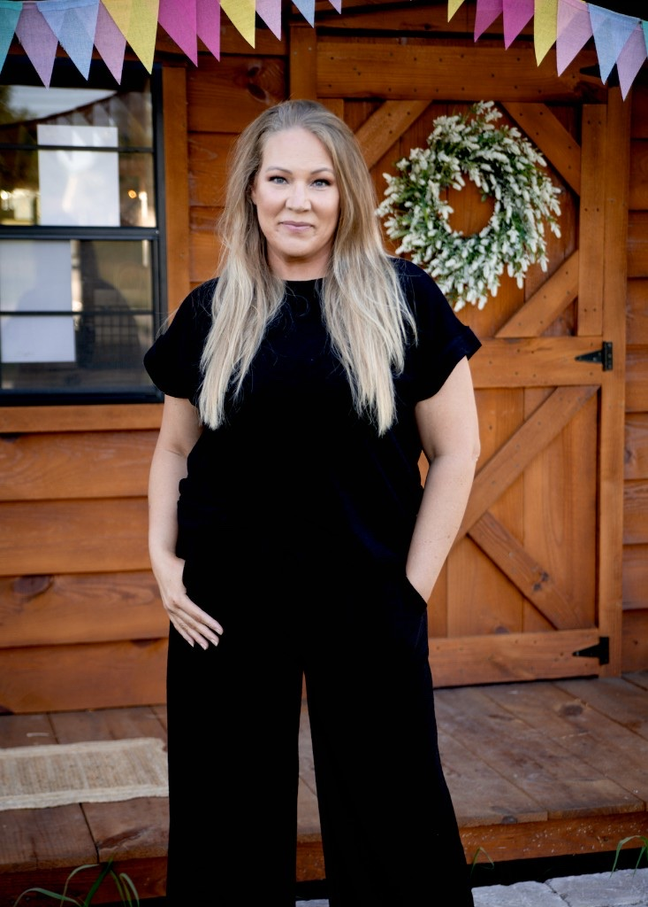
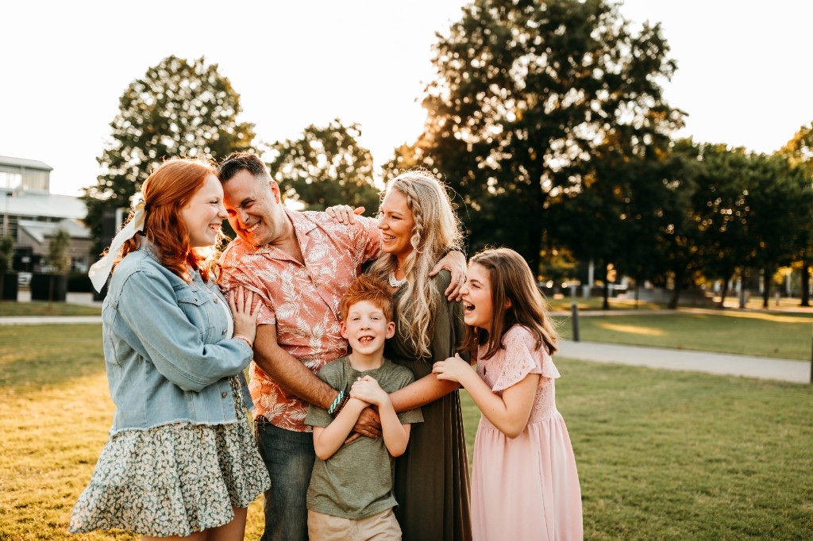

Nine years in clean beauty taught me what trust looks like — and what happens when your life expands beyond the bathroom counter. This is the story of how I got here, and why Ringana is the next chapter.

The Short Version
I'm the woman behind Mindful Living and @mindfullivingrox — wife, mama to two girls and one boy, dog mom, chicken keeper to 33 feathered freeloaders, holistic-living enthusiast, and the whole-body wellness bestie who will absolutely turn your shampoo bottle around and read the ingredient label with you.
For the past sixteen years, I've been learning how to lessen the everyday burden on our bodies without making healthy living feel stressful, extreme, or impossible.
For the last nine years, I've also built a full-time clean beauty network marketing business from the ground up.
Nearly $700,000 in personal sales. Nearly $11 Million in team sales. Tens of Thousands of customers served. Countless ingredient labels studied. More late-night shade-matching and skincare routine recommendation messages than I could ever count.
Ingredient labels became my love language and apparently, questionable preservatives became my personal nemesis.
I have spent years helping people understand what is in their products, why it matters, and how to make realistic swaps that work for their homes, their families, and their budgets.
I don't recommend something simply because it is trending, beautifully packaged, or labeled “clean.”
I ask questions. I read the fine print. I look beyond the marketing.
And I will never recommend something to another woman that I would not feel comfortable using in my own home or on my own family.
My loyalty has always been to the men and women who trust me — not to staying comfortable.
Where I Started
I grew up in a very normal household when it came to food, personal care, and cleaning products.
My parents loved me deeply and followed the information and recommendations available to them at the time. They simply did not know what they had never been taught.
Like so many families, we ate ultra-processed foods, fast food, Hot Pockets, Pop Tarts, and plenty of brightly colored snacks that probably could have glowed in the dark.
Our personal care and cleaning products came from the grocery store, Walmart, and when we were feeling fancy… Bath & Body Works.
Nothing about it seemed unusual. It was simply normal.
But as I got older, my body started telling a different story.
I dealt with frequent strep throat, mononucleosis, tonsillitis, bronchitis, and round after round of antibiotics. Depression and anxiety entered the picture early, too.
After going through a divorce at a young age, I spent years trying to find myself in all the wrong places—usually somewhere near the bottom of a bottle in a hole-in-the-wall bar.
I smoked a pack of cigarettes a day and lived in a way that looked carefree from the outside but felt anything but free on the inside.
Then one day, something in me woke up. I knew I needed a different life.
So I asked my boss a question that would change everything: “Is there anywhere in the world I could move and still keep my job?”
Two weeks later, I packed up my life in Austin, TX and moved to Nashville, Tennessee. I knew no one. I had no safety net. I was starting completely from scratch.
Eight months later, I was married. 21 months after that, we welcomed our first baby girl.
And suddenly, the choices I made were no longer only about me.
Motherhood gave me a reason to question what I had always accepted. I realized I had the opportunity to raise my babies differently—to learn what I had never been taught and give them a healthier foundation from the beginning.
That was the beginning of everything.

My Health Journey
My wellness journey did not begin with a perfectly stocked pantry, a degree in nutrition, or an overnight transformation.
It began slowly. Organic fruit. A few supplements. Learning about essential oils. Turning over the bottle and wondering what half the words meant.
One question led to another, and before long, I was deep-diving into every corner of holistic health I could find.
I do not claim to know everything. In fact, the more I learn, the more I realize how much there still is to understand.
Health information evolves. Research changes. Our bodies change. Our seasons change.
But I also began noticing meaningful differences when I reduced my exposure to certain personal care and household products. Over time, painful cystic acne became part of my past, and my overall experience with everyday illness changed significantly.
Still, my health journey was far from over.
After the birth of my third baby, my body began making it impossible to ignore that something deeper was going on.
In 2020, I was diagnosed with Hashimoto's thyroiditis—although looking back, it was clear that my body had likely been battling it for many years before I finally had a name for it.
The diagnosis connected so many dots, but it also opened the door to an entirely new and elevated level of learning.
I began to understand that reducing toxins and choosing cleaner products was incredibly important—but it was not the whole picture.
My body needed support on multiple levels, and healing was not going to come from one product, one supplement, or one perfect routine.
In the years that followed, I continued navigating layers of autoimmune and hormonal challenges that forced me to slow down, listen more closely, and start asking new questions.
After nine years of building in clean beauty at full speed, I found myself searching again.
Not because I had stopped believing in clean beauty. Not because the work I had done no longer mattered. And not because I was looking for a shiny new opportunity.
I was searching because my life had expanded beyond beauty—and I needed the products and mission I stood behind to expand with it.
I still deeply value the skincare and makeup products I have shared for years. But I also knew that makeup and skincare alone could not address every layer of wellness my family, my clients, and I were navigating.
I was not searching for another slightly better ingredient list. I was searching for a bigger vision.
A company with an entire philosophy built around freshness, product integrity, innovation, transparency, sustainability, beauty, and whole-body wellness.
I was looking for the company I had been asking the industry to become.
The Journey
Like many women who begin working in wellness, I started because something in my own life needed to change.
Then I became pregnant, and it was no longer only about my body. It was about the tiny life growing inside of me.
That season sparked something deeper. I began to understand that the products we use every day matter—and that sharing better options could become more than a personal passion.
It could become a real business. A vehicle for impact. A way to help women while also creating income, flexibility, community, and purpose.
What began as a desire to make better choices for my own family became a calling to help other women do the same.
That love for sharing, teaching, and helping has never left me. It is still the heartbeat behind everything I do.
When I decided to build, I went all in.
I studied. I found mentors. I stayed up late writing content, answering messages, creating systems, learning ingredients, helping women choose their first products, and matching foundation shades through photos taken in questionable bathroom lighting.
I learned what makes someone curious. I learned what helps her feel confident enough to make a change. I learned what makes her stay.
And most importantly, I learned that women do not need more pressure. They need someone they trust.
Over the past nine years, I have helped thousands of women begin removing products that no longer aligned with their standards and replace them with options they felt good about.
I never take that trust lightly. It is an honor every single time someone says, “I knew you would tell me the truth.”
After nine years in the industry—and while continuing to work through my own health challenges—I began to feel that something was missing.
Not a missing lipstick shade. Not another serum. Not another product launch wrapped in a pretty campaign.
A bigger piece.
I wanted products that could support more areas of daily life. I wanted to guide people beyond beauty and into a more connected conversation about wellness.
I had not lost faith in clean living. I had simply outgrown the idea that clean beauty should stop at the bathroom counter.
I was not burned out on helping people. I was not done building. I was not walking away from the mission. I was ready to go deeper.
But when you have spent years teaching people to raise their standards, you cannot lower your own just because you are ready for something new.
The next chapter had to be extraordinary. My checklist was long. My standards were high. And honestly, I was not sure what I was looking for even existed.
Then I learned about Ringana.
A family-founded Austrian company established in 1996, built around a concept that immediately stopped me in my tracks: fresh production instead of relying on long-term preservation.
Freshly produced skincare and supplements. Potent plant-based ingredients. Manufacturing handled in-house. A commitment to transparency, sustainability, innovation, and formulas designed differently from the conventional beauty and wellness model.
Ringana has been approaching beauty and wellness through a lens I had been waiting to see—one that connected what we put on our bodies with how we support them from within.
The more I learned, the more I realized: This was not a pivot away from my story or my current path. It was the next chapter of it.
To say I have been counting down to the U.S. launch would be an understatement. This is the kind of standard I have been asking the industry to meet for years.
I am now building my founding Ringana team ahead of the U.S. launch.
Through this partnership, I am gaining early access to experience products, study the philosophy behind them, and share honest first impressions as the U.S. offering takes shape.
And “honest” will always be the operative word.
I will share what I love. I will explain what makes something different. I will answer the hard questions. And I will never ask anyone to blindly follow me into something simply because I am excited about it.
I want you to understand why. Because trust is not built through hype. It is built through consistency. It is built by telling the truth even when the truth is less marketable. And it is built over years—not during a launch week.
This next season is bigger than introducing a new product line. It is about helping women rethink what freshness, beauty, wellness, and business can look like when none of them have to be separated.
Why Build With Me
I have personally sold nearly $700,000 in clean beauty and skincare over the past nine years.
Not my team's sales. Not a company-wide number. My personal sales, built through serving an incredible and loyal community of clients.
Numbers like that are not created by luck or one viral post. They are built through follow-up. Knowledge. Consistency. Trust. Systems that work. And thousands of small conversations where someone felt heard, supported, and never pressured.
I know how to help a woman make her first clean swap. I know how to turn complicated information into language that makes sense. I know how to build relationships that last far beyond one transaction. And I know how to help women build businesses that feel personal without becoming chaotic.
When you join my founding team, you are not starting from a blank page.
You will receive the systems my team and I have spent years developing and refining. You will receive direct mentorship from someone who has built through changing seasons, shifting algorithms, personal challenges, company changes, and every stage in between.
You will learn how to share products with integrity, communicate clearly, care for customers well, and build without becoming someone you no longer recognize.
You will also gain access to the ingredient knowledge and wellness education I have spent years developing—so you can confidently support yourself, your family, and the people who trust you.
I cannot promise an overnight success story. I do not believe in building businesses on borrowed hype.
But I can promise leadership that is honest, experienced, deeply invested, and willing to roll up its sleeves beside you.
The Right Fit
I'd rather build with people who value honesty over hype — and integrity over shortcuts.
I'm not here to pressure anyone. I'm here to share what I've found, answer your questions honestly, and help you decide if this is right for your life — whether that's as a customer, a teammate, or neither.
If you care about product integrity, freshness that actually means something, and building something meaningful before a market even opens — we should talk. If you're looking for a get-rich-quick scheme, I'm probably not your person, and that's okay.
The best partnerships start with honesty on both sides. That's how I've always operated, and it's not changing now.
Stay Connected
Join the founding list for launch updates and my honest product notes — or reach out on Instagram if you'd rather chat first.